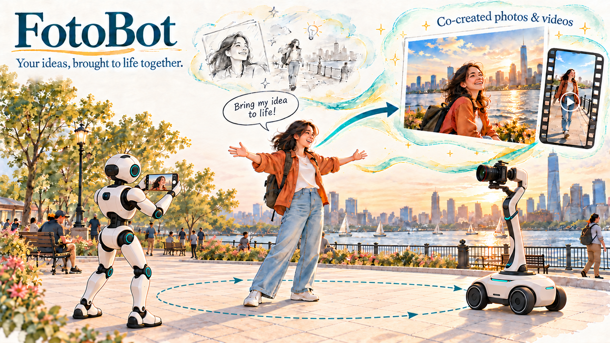

什么是 FotoBot？

大语言模型（LLM）的进展，为机器人在开放的真实环境中工作带来了新的可能。随着这些能力向超级智能（SI）发展，机器人有望自主承担更多日常任务，让人们有更多时间旅行、创作和分享生活。然而，如果缺乏相应技能，将个人创意转化为绘画、照片和视频博客（vlog）等文化作品并不容易。拍出一张出色的照片，或制作一段精良的 vlog，往往需要专业知识，甚至需要整个制作团队的支持。
超级智能能否让机器人成为人们的创作伙伴，让更多人轻松表达创意？传统机器人主要面向目标明确的实用任务，而创意性人机协作还要求机器人理解个人意图、审美偏好和主观判断。这一愿景推动了 FotoBot 系列研究，探索机器人如何成为创作过程中的交互式伙伴。我们的使命是：让每个人都能将创意变为现实，无需具备专业技能。
自 2024 年启动项目以来，我们围绕机器人摄影与视频拍摄开展了多方面探索。研究借助先进的超级智能技术，涵盖三个方向：集成大语言模型的系统原型（FotoBot）、自主肖像摄影算法与城市服务流程（LEAP），以及面向 vlog 拍摄的相机跟随与运动控制。我们的方法将审美判断与安全、自适应的机器人运行相结合，以适应动态公共空间。在人机交互方面，我们提供了完整且注重隐私保护的服务流程，让用户清楚了解图像的拍摄与存储方式。该流程还使用 GPT 模型解析用户指令、理解用户意图。大量实地部署实验验证了这些系统在真实城市环境中运行的可行性。
与此同时，我们正在探索以下三个未来研究方向：
- 基于智能体运行框架的摄影系统，能够在多种场景中响应用户以自然语言自由表达的指令。
- 递归自我改进（RSI）方法，实现系统自动改进并适应个人偏好。
- 面向 vlog 拍摄的相机运动技能库，涵盖推近、拉远、环绕拍摄和横向跟拍等运镜方式。
通过这些探索，我们希望机器人能够为人们提供支持，与人协作创作文化作品。我们期待在不久的将来，让机器人创作辅助高效、可靠地融入日常生活，并让每个人都能便捷使用。
研究成果
FotoBot：集成大语言模型的摄影机器人原型
论文：FotoBot：具身智能摄影机器人系统的设计、原型开发与应用
开发者：Dawei Wang。
LEAP：面向摄影的具身审美学习
论文：（Nature Cities 审稿中）作为创意城市服务的自主机器人摄影
开发者：Chang Chen。
- 系统流程与成果概览。
- 在深圳人才公园开展的一日实地部署。
机器人 vlog 拍摄
开发者：Ruixing Jia。
如果你对这一研究方向感兴趣，欢迎关注我们的工作，或通过电子邮件（changchen@connect.hku.hk）联系我们，探讨潜在的合作机会。